vignettes/plot-smooths.Rmd
plot-smooths.RmdTo illustrate how to use plot_smooths(), let’s first prepare some dummy data with a factor variable and run gam() on this data.
We need to load the following packages.
The gam model includes a reference smooth s(x2), a by-factor difference smooth s(x2, by = fac), and a smooth s(x0). For more flexibility and for more complex models, using predict_gam() and then plotting the predicted data yourself might be helpful (see “predict-gam” vignette).
set.seed(10)
data <- gamSim(4)
#> Factor `by' variable example
model <- gam(
y ~
fac +
s(x2) +
s(x2, by = fac) +
s(x0),
data = data
)We can now plot the estimated smooths for the two levels of fac. The function supports factors with more than 2 levels.
plot_smooths(
model = model,
series = x2,
comparison = fac
) +
theme(legend.position = "top")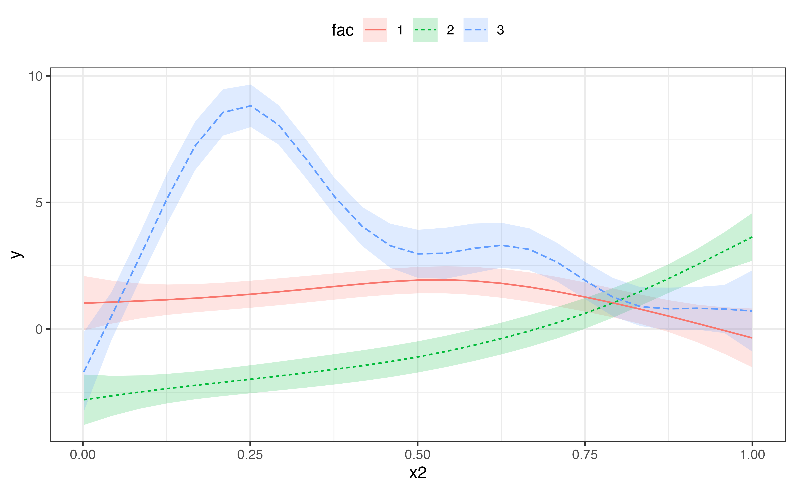
With models that transform the response scale (like Poisson and binomial models), use the transform argument with the function to be used for transformation as the value. Let’s first load some data and fit a Poisson GAM.
We can now plot on the response scale using transform = exp.
plot_smooths(pois_gam, x, fac, transform = exp, series_length = 70) +
theme(legend.position = "top")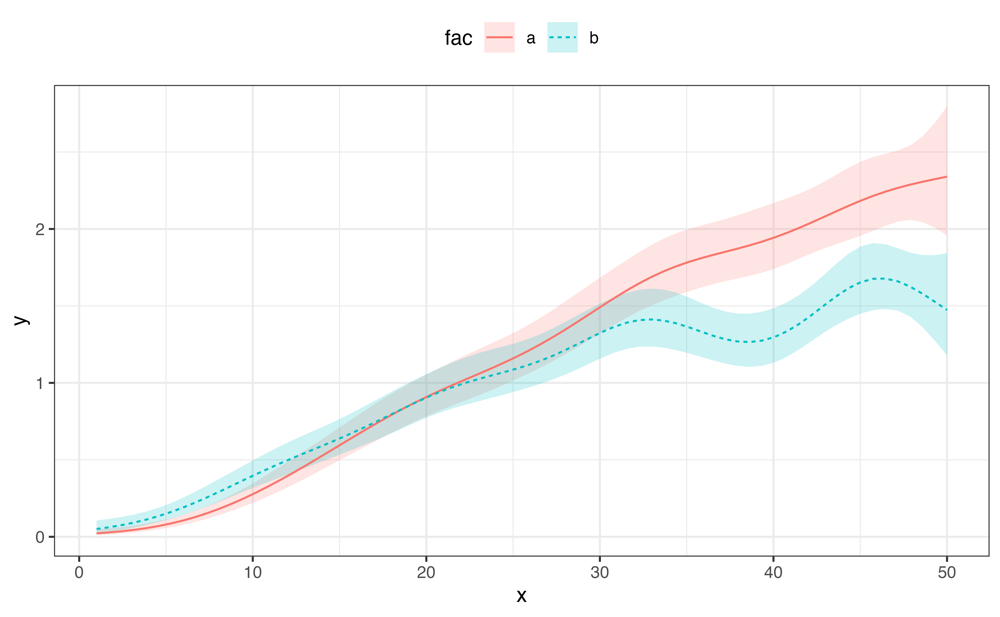
It is also possible to plot a single smooth.
model_2 <- gam(
y ~
s(x0) +
s(x2),
data = data
)
plot_smooths(
model = model_2,
series = x0
)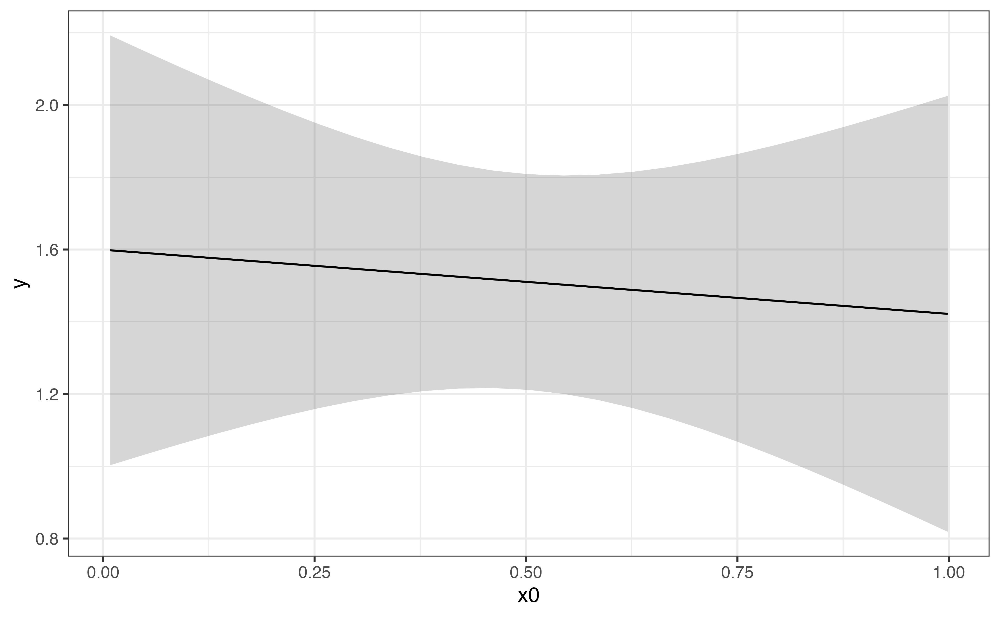
It is possible to plot models with interactions by specifying faceting with the facet_terms and split arguments.
data("inter_df")
inter_df <- inter_df %>%
mutate(
x1x2 = interaction(x1, x2)
)
model_inter <- bam(
y ~
x1x2 +
s(x0, k = 8, by = x1x2),
data = inter_df
)The split argument allows the user to split the factor interaction (back) into separate factors, which can be used to facet with the facet_terms argument. split takes a named list, where each object in the list is a named vector with the names of the new factors as strings (c("x1", "x2")) and the name of the factor interaction to be split as the name of this vector (x1x2 = ...).
plot_smooths(
model = model_inter,
series = x0,
comparison = x1,
facet_terms = x2,
split = list(x1x2 = c("x1", "x2"))
) +
theme(legend.position = "top")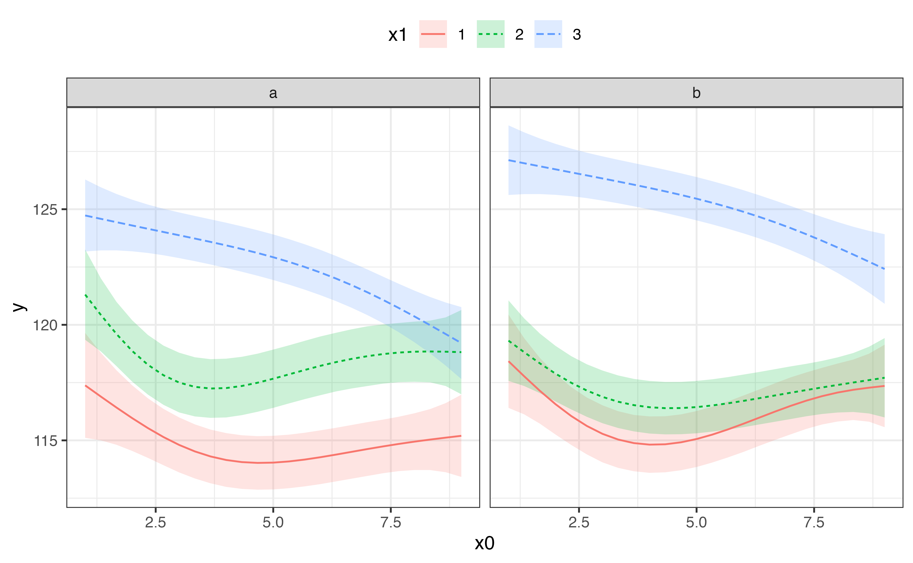
You can use the sep argument to specify the character used for separating the factor interaction. By default is "\\.", which is the default character used when creating interactions with interaction().
To plot just one or some of the facets, you should use the conditions argument. This argument takes a list of quosures with quos(). The quosures are statements like the ones used in dplyr::filter(), and you can include multiple statements separated by commas inside quos().
plot_smooths(
model = model_inter,
series = x0,
comparison = x1,
facet_terms = x2,
conditions = quos(x2 == "b"),
split = list(x1x2 = c("x1", "x2"))
) +
theme(legend.position = "top")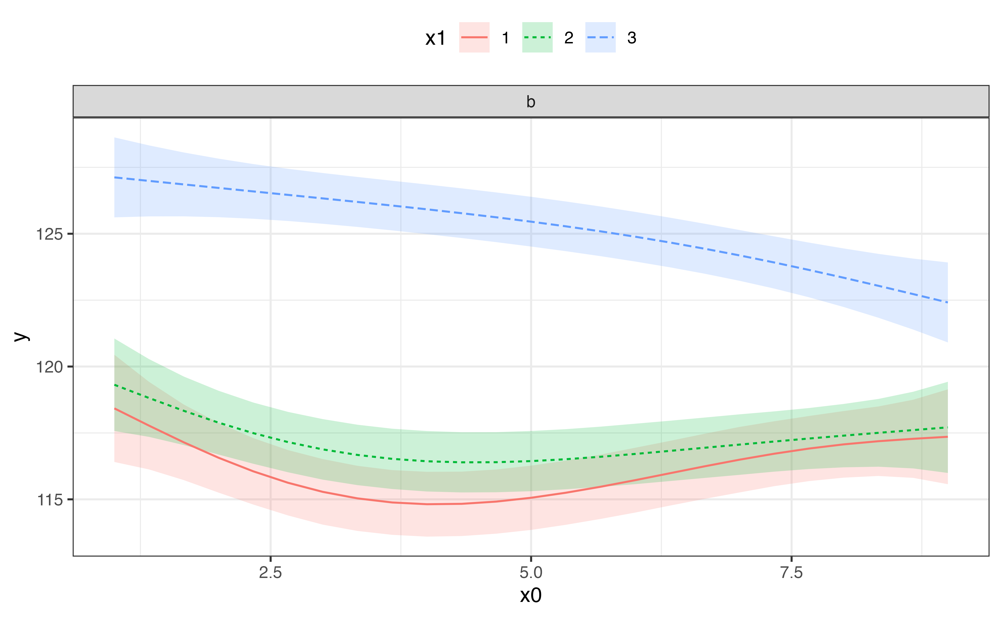
plot_smooths(
model = model_inter,
series = x0,
comparison = x1,
facet_terms = x2,
conditions = quos(x1 %in% c(1, 3)),
split = list(x1x2 = c("x1", "x2"))
) +
theme(legend.position = "top")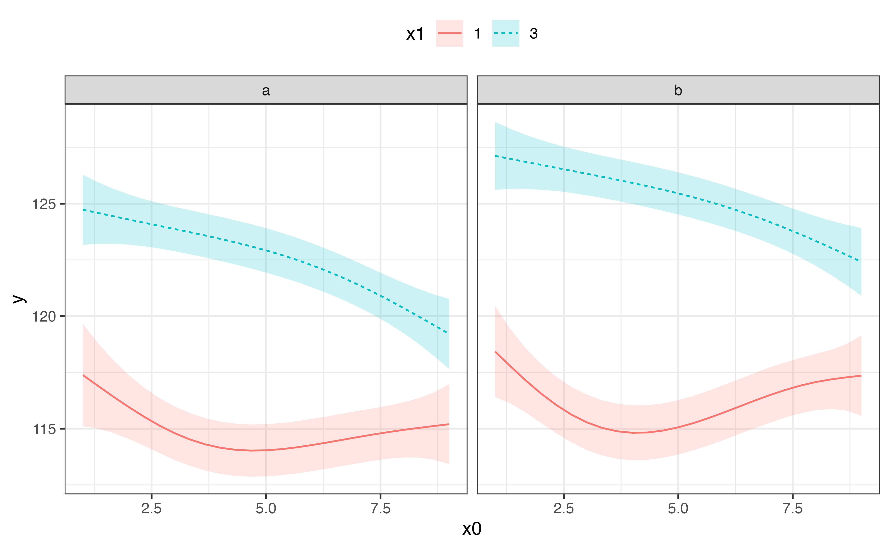
If you need more flexibility (for example, if you’d like to be able to select variables as aesthetics rather than facets), the most straightforward solution is to get the predictions of the model with get_gam_predictions() and use the standard ggplot2 functions.
To get confidence intervals, geom_ribbon() must have a group aesthetic set to the index column .idx, which is automatically generated by get_gam_predictions().
preds <- get_gam_predictions(model_inter, x0, split = list(x1x2 = c("x1", "x2")))
preds %>%
ggplot(aes(x0, y)) +
geom_ribbon(aes(ymin = CI_lower, ymax = CI_upper, fill = x1, group = .idx), alpha = 0.3) +
geom_line(aes(colour = x1, linetype = x2))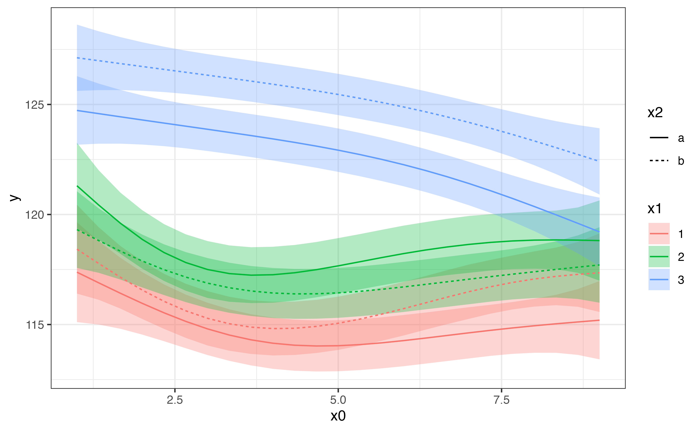
The difference smooth can be plotted with plot_difference(). The difference smooth is the difference between the smooths of two conditions (two levels in a factor). Portions of the difference smooth confidence interval that do not include 0 are shaded in red.
The following is a difference smooth comparing the two levels of the fac term in the Poisson GAM above.
plot_difference(
pois_gam,
series = x,
difference = list(fac = c("b", "a"))
)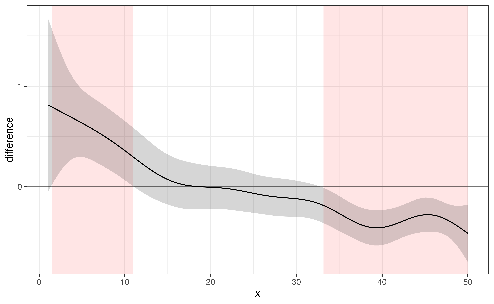
To plot a difference smooth from a model with factor interactions, it is possible to specify the two levels to compare from the factor interaction (the argument split is not supported in plot_difference()).
plot_difference(
model_inter,
x0,
difference = list(x1x2 = c("2.a", "3.a"))
)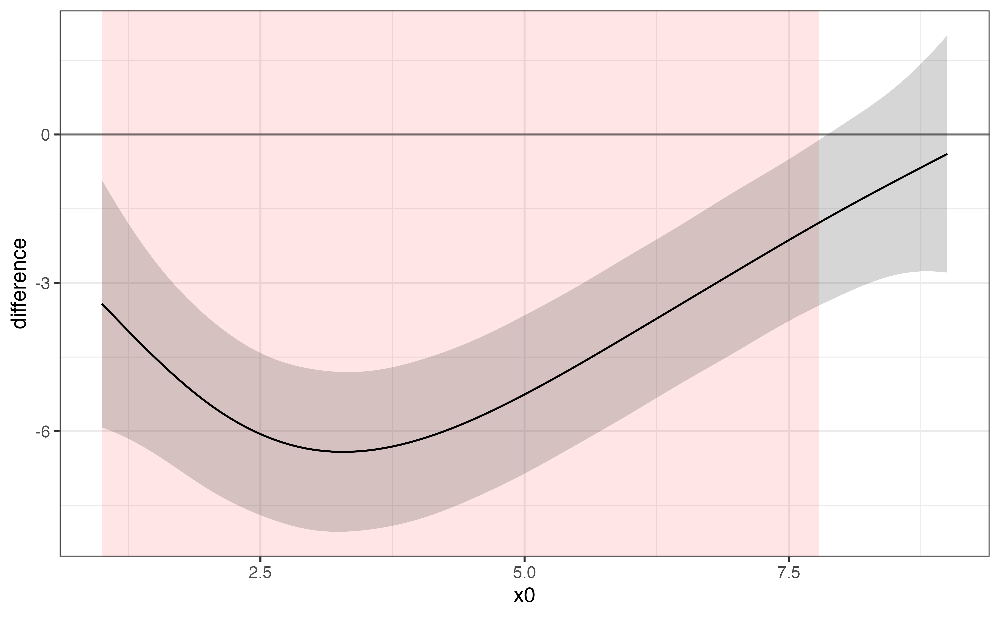
plot_difference(
model_inter,
x0,
difference = list(x1x2 = c("1.b", "2.b"))
)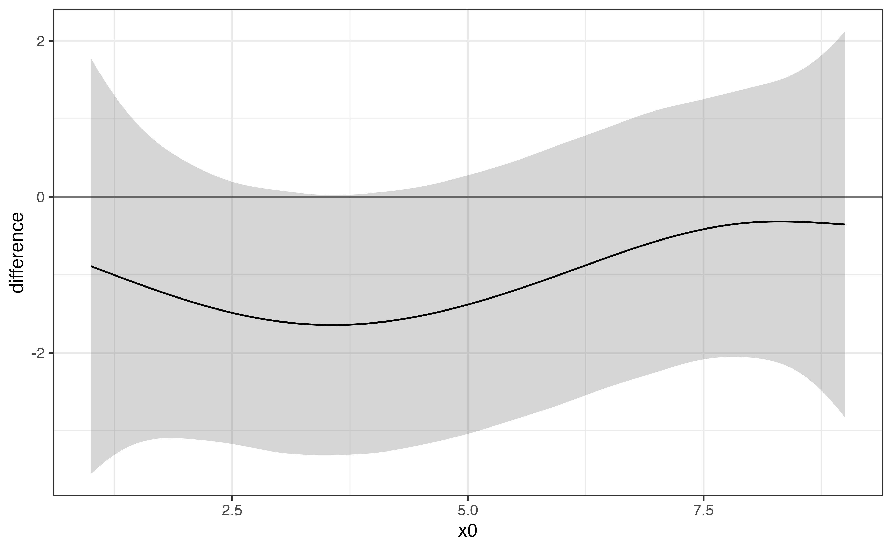
If you would rather get a tibble with the difference smooths and plot it yourself, you can use get_smooths_difference().
inter_diff <- get_smooths_difference(model_inter, x0, list(x1x2 = c("2.a", "3.a")))
inter_diff %>%
ggplot(aes(x0, difference)) +
geom_hline(aes(yintercept = 0), colour = "#8f5f3f") +
geom_ribbon(aes(ymin = CI_lower, ymax = CI_upper, fill = sig_diff), alpha = 0.3) +
geom_line(aes(colour = sig_diff), size = 1) +
scale_colour_manual(values = c("#e35760", "#6f849c")) +
scale_fill_manual(values = c("#e35760", "#6f849c")) +
labs(colour = "significant", fill = "significant") +
theme(legend.position = "top")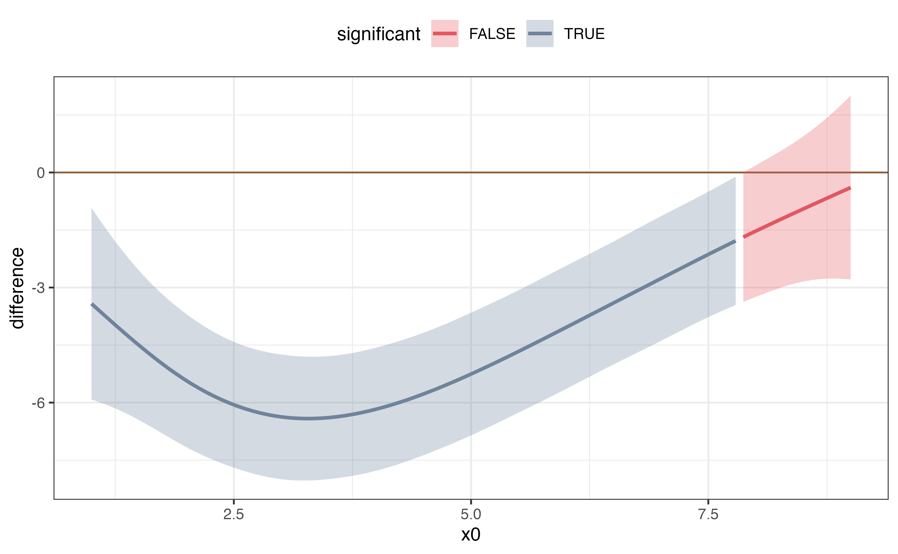